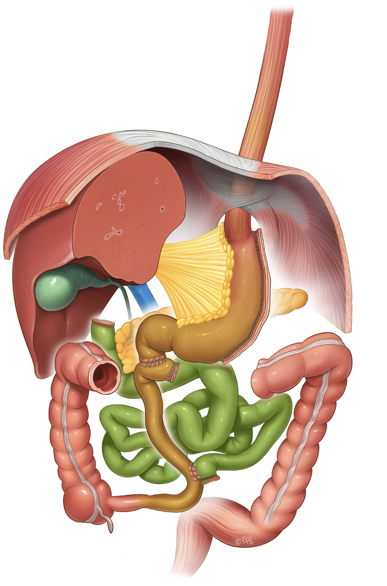

BARIATRISCHE CHIRURGIE
BPD/DS
Biliopankreatische Diversion mit Duodenal Switch
1-1,5 h
Dauer
2-3 Tage
Aufenthalt
2 Wo.
Erholung
BARIATRISCHE CHIRURGIE
Biliopankreatische Diversion mit Duodenal Switch
Bei extremer Adipositas braucht es manchmal das wirkungsvollste Verfahren - der BPD/DS erzielt den höchsten Gewichtsverlust.
Ein anspruchsvoller Eingriff, der Schlauchmagen und umfangreiche Dünndarm-Umleitung kombiniert. Für Patienten, bei denen andere Verfahren nicht ausreichen.
Das Verfahren
Komplexestes bariatrisches Verfahren. Kombiniert Schlauchmagen mit umfangreicher Umleitung des Dünndarms. Stärkste malabsorptive Komponente. Höchster Gewichtsverlust.

Warum dieses Verfahren
Ergebnisse
Der höchste erreichbare Gewichtsverlust aller bariatrischen Verfahren - nachhaltig und langfristig stabil.
Exzellente Langzeitergebnisse bei Typ-2-Diabetes mit Remissionsraten von über 90%.
BPD/DS ist das Verfahren der Wahl bei höchstgradiger Adipositas, wenn andere Eingriffe nicht den gewünschten Erfolg erzielen.
Eignung
„BPD/DS ist das wirksamste Verfahren bei extremer Adipositas. Die Entscheidung dafür treffen wir sehr individuell.“Univ.-Prof. Dr. Gerhard Prager
Häufige Fragen
BPD/DS steht für Biliopankreatische Diversion mit Duodenal Switch. Es ist das komplexeste bariatrische Verfahren und kombiniert einen Schlauchmagen mit einer umfangreichen Umleitung des Dünndarms. Die starke malabsorptive Komponente führt zum höchsten Gewichtsverlust aller Verfahren.
Im Unterschied zum Magenbypass oder SADI-S hat der BPD/DS die umfangreichste Darmumleitung und damit die stärkste malabsorptive Wirkung. Durch den Erhalt des Pylorus (Magenpförtner) ist das Risiko für Dumping-Syndrom geringer. Dafür ist die Nachsorge intensiver.
BPD/DS erfordert eine konsequente lebenslange Supplementierung mit Vitaminen, Mineralstoffen und Eiweiß. Regelmäßige Blutkontrollen sind essenziell, um Mangelzustände frühzeitig zu erkennen. Die Nachsorge ist intensiver als bei anderen bariatrischen Verfahren.
Rufen Sie uns unter +43 660 489 58 51 an oder nutzen Sie das Kontaktformular. Im Erstgespräch klären wir gemeinsam, welches Verfahren für Sie optimal ist.

IHR CHIRURG
IFSO Weltpräsident 2023/2024. Über 9.900 Eingriffe. Professor an der MedUni Wien.
Fragen zum BPD/DS?
Termin vereinbaren →Ein Erstgespräch ohne Verpflichtungen - in dem wir gemeinsam klären, welcher Weg medizinisch am sinnvollsten ist.
+43 660 489 58 51 Persönliches Erstgespräch vereinbarenNach telefonischer Terminvereinbarung